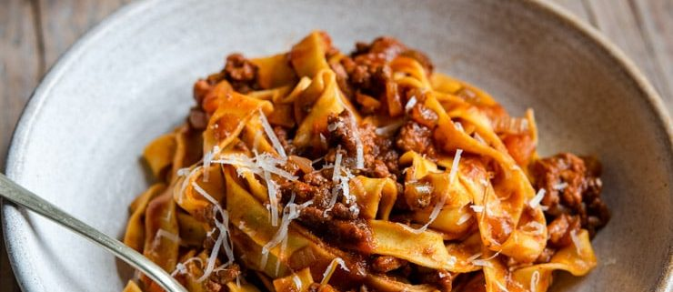

Beef Ragu

Description
A classic Italian beef ragu that's easy and packed full of flavour! This ground beef ragu is made using only a few simple ingredients and can be used in so many ways. Toss it with fresh tagliatelle pasta, make it into lasagne with bechamel sauce or use it as a filling for homemade ravioli for a truly authentic Italian meal. Find step by step photos and instructions below.
This Italian ragu is slow-cooked because it needs time to develop all the incredible flavours BUT it's not as time-consuming as you may think.
Ingredients
- 1 carrot
- 1 white onion
- 1 stalk celery
- 8.8 oz 250g ground beef (mince)
- 8.8 oz 250g ground pork (mince)
- 2 cups sieved tomatoes (passata)
- 1 cup (230ml) red wine
- 4 cups beef stock (1 litre)
- 1 tablespoon olive oil
- 1 pinch salt and pepper
Steps
- Finely chop the carrot, onion and celery and sweat the vegetables gently in a large frying pan with the olive oil. Once the vegetables are soft add the ground beef and pork and cook until browned.
- If there is a lot of excess fat in the pan, drain some out. Add the red wine and reduce by half. Once the wine has reduced by half add the passata and half of the beef stock and a pinch of salt and pepper.
- Stir the sauce and let it simmer on a low heat for 2 and a half hours topping up the rest of the stock as it reduces.
- Tip: Remeber to check on the ragu every now and then to stir it and add extra stock or water if needed.
- To serve with pasta add cooked pasta into the ragu and toss or use as desired.